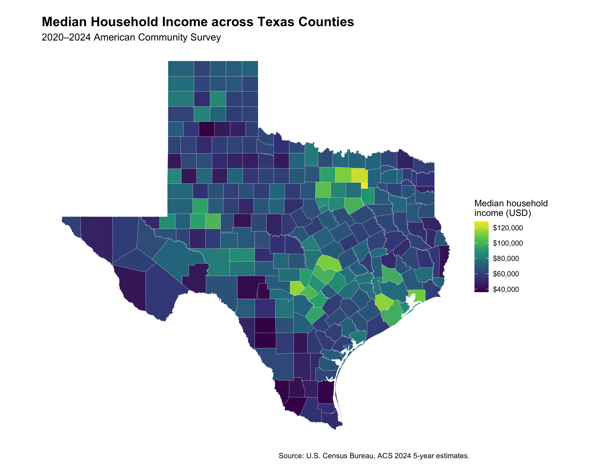

EPPS 6302: Methods of Data Collection and Production
Assignment 3: ACS via tidycensus
Assignment 3: ACS via tidycensus
Income and Poverty across Texas Counties
EPPS 6302 — Methods of Data Collection and Production | Fall 2026
1. Data and Variables
Source: U.S. Census Bureau, 2024 ACS 5-year estimates (2020–2024), retrieved November 26, 2026, at 17:06:33 CST. The dataset contains 254 Texas counties, with one observation per county and no missing estimates or margins of error (MOEs).
Variable
ACS code
Median household income (2024 dollars)
B19013_001
Population below poverty level
B17001_002
Population for whom poverty status is determined
B17001_001
Show R code
library(tidycensus)library(tigris)library(sf)library(dplyr)library(tidyr)library(ggplot2)library(readr)options(tigris_use_cache =TRUE)my_vars <-c(income ="B19013_001", pov ="B17001_002",povden ="B17001_001")vars <-load_variables(2024, "acs5")vars |>filter(name %in%unname(my_vars))# The API key is configured locally in .Renviron.# This acquisition block is not executed when rendering.data_dir <-"data/assignment03"dir.create(data_dir, recursive =TRUE, showWarnings =FALSE)raw_file <-file.path(data_dir, "acs_TX_2024_raw.rds")if (!file.exists(raw_file)) { retrieval_time <-Sys.time() acs_raw <-get_acs(geography ="county", state ="TX", variables = my_vars,year =2024, survey ="acs5", geometry =TRUE,output ="wide", moe_level =90,key =Sys.getenv("CENSUS_API_KEY") )saveRDS(acs_raw, raw_file)writeLines(format(retrieval_time, tz ="America/Chicago", usetz =TRUE),file.path(data_dir, "retrieval_time.txt"))}
Show R code
library(tidycensus)library(sf)library(dplyr)library(ggplot2)library(readr)# Render from the archived download, without calling the API.data_dir <-"data/assignment03"acs_raw <-readRDS(file.path(data_dir, "acs_TX_2024_raw.rds"))stopifnot(inherits(acs_raw, "sf"), nrow(acs_raw) ==254,anyDuplicated(acs_raw$GEOID) ==0,all(acs_raw$povdenE >0))acs_wide <- acs_raw |>mutate(pov_rate = povE / povdenE,pov_moe =moe_prop(povE, povdenE, povM, povdenM),poverty_pct =100* pov_rate,poverty_moe =100* pov_moe,ci_lower =pmax(0, poverty_pct - poverty_moe),ci_upper =pmin(100, poverty_pct + poverty_moe) )county_data <-as_tibble(st_drop_geometry(acs_wide))stopifnot(all(is.finite(county_data$poverty_pct)),all(is.finite(county_data$poverty_moe)))# A tidy CSV with one row per county is already archived.# write_csv(county_data, file.path(data_dir, "acs_TX_2024.csv"))
2. Choropleth Map: Median Household Income
Show R code
ggplot(acs_wide) +geom_sf(aes(fill = incomeE), color ="white", linewidth =0.08) +scale_fill_viridis_c(labels = scales::label_dollar(),name ="Median household\nincome (USD)" ) +labs(title ="Median Household Income across Texas Counties",subtitle ="2020–2024 American Community Survey",caption ="Source: U.S. Census Bureau, ACS 2024 5-year estimates.") +theme_void() +theme(plot.title =element_text(size =16, face ="bold"),plot.subtitle =element_text(size =12),plot.caption =element_text(size =9),legend.position ="right",plot.margin =margin(15, 15, 15, 15))

Figure 1: Median household income across Texas counties (2024 inflation-adjusted dollars).
County median household income ranges from $36,165 in Swisher County to $127,981 in Rockwall County. The map shows higher estimated incomes in parts of the major metropolitan areas and lower estimates in several southern and rural counties. Colors represent point estimates, not statistical significance.
Table 1: Texas counties with the ten highest and ten lowest estimated poverty rates.
Group
Rank
County
Poverty rate (%)
MOE (± pp)
90% CI (%)
Highest
1
Dimmit County
41.11
8.88
32.23–49.98
Highest
2
Zapata County
38.39
6.04
32.35–44.44
Highest
3
Zavala County
33.92
9.53
24.39–43.45
Highest
4
Starr County
33.52
3.23
30.29–36.75
Highest
5
Duval County
33.27
8.40
24.88–41.67
Highest
6
Presidio County
32.00
12.78
19.22–44.78
Highest
7
Edwards County
31.87
23.24
8.62–55.11
Highest
8
Jim Hogg County
31.43
11.15
20.28–42.57
Highest
9
Swisher County
30.10
6.90
23.20–37.00
Highest
10
Kleberg County
28.09
4.33
23.76–32.43
Lowest
1
Rockwall County
4.04
0.69
3.35–4.73
Lowest
2
Sterling County
4.32
2.88
1.44–7.21
Lowest
3
Sutton County
4.51
2.85
1.66–7.36
Lowest
4
Kendall County
5.03
1.43
3.60–6.46
Lowest
5
Armstrong County
5.19
2.80
2.40–7.99
Lowest
6
Foard County
5.57
4.39
1.19–9.96
Lowest
7
Roberts County
5.65
3.87
1.78–9.52
Lowest
8
Loving County
6.06
2.52
3.54–8.59
Lowest
9
Hemphill County
6.19
3.24
2.95–9.43
Lowest
10
Collin County
6.23
0.35
5.88–6.59
MOE is expressed in percentage points (pp). Rankings use unrounded point estimates. Confidence intervals are bounded by 0% and 100%.
4. Uncertainty Check
Dimmit County has the highest estimated poverty rate (41.11%, MOE ±8.88 pp), followed by Zapata County (38.39%, MOE ±6.04 pp). Their 90% confidence intervals are 32.23–49.98% and 32.35–44.44%, respectively, and overlap substantially. In fact, all 18 adjacent pairs within the highest and lowest groups have overlapping intervals. The precise ranking is therefore uncertain; interval overlap alone does not establish whether a difference is statistically significant.
The analysis uses 2020–2024 ACS 5-year estimates for all 254 Texas counties. Counties provide a consistent geographic unit for comparing socioeconomic conditions while keeping the statewide map readable. Median household income measures household economic resources in 2024 inflation-adjusted dollars. Poverty is measured as the number of people below the poverty threshold divided by the population for whom poverty status is determined, rather than as a raw count. Data and county boundaries were obtained through tidycensus, retaining the original estimates and their margins of error. The poverty-rate MOEs were propagated using moe_prop() and converted into percentage points. Approximate 90% confidence intervals were constructed by adding and subtracting the corresponding MOE. The ranking is based on point estimates, not statistical tests. Overlapping intervals and large MOEs, particularly in counties such as Edwards, limit confidence in precise rankings. The income map likewise displays estimated values rather than significant differences. Raw data were cached locally to preserve the downloaded estimates and support reproducible analysis.